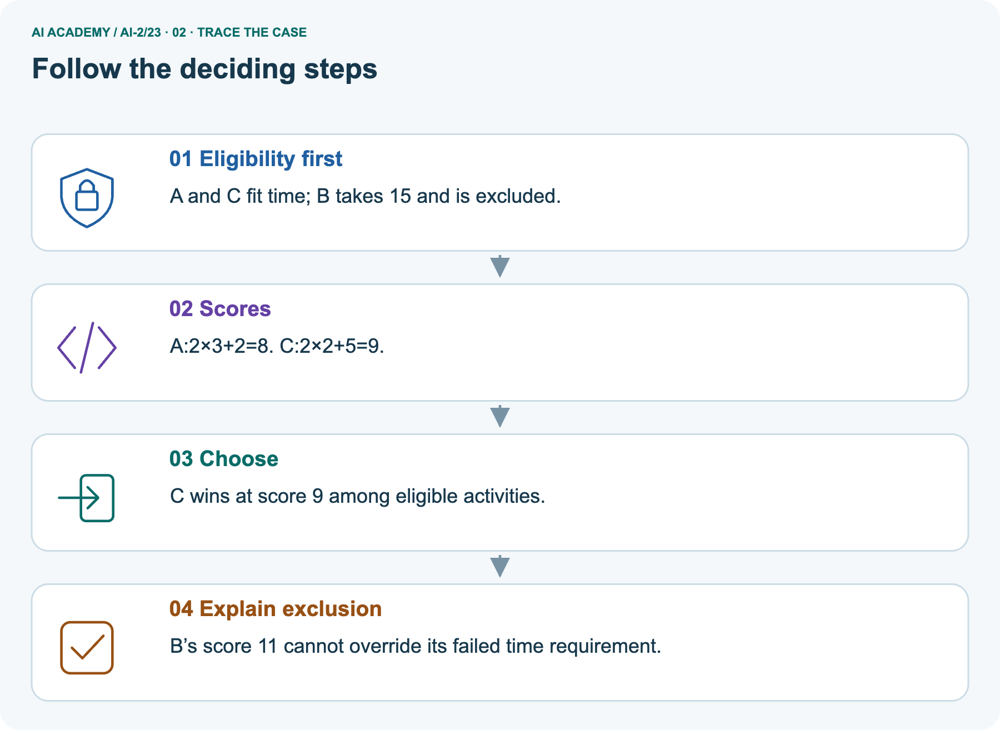
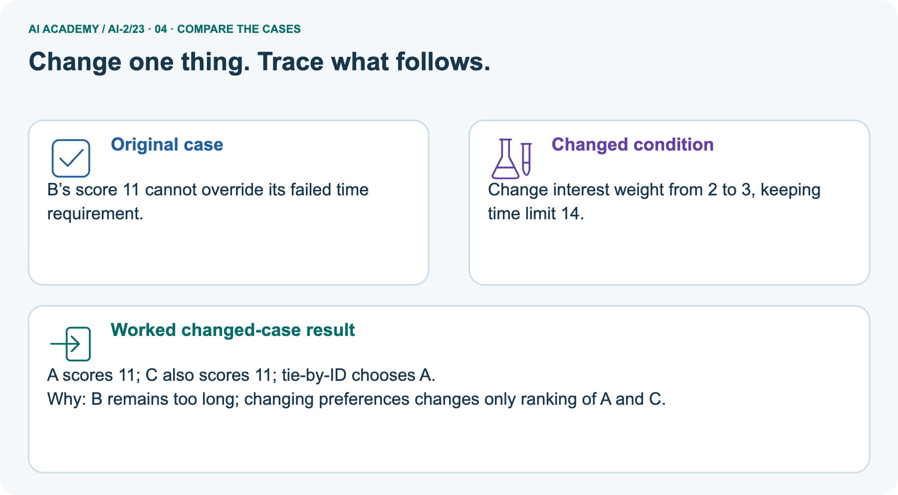
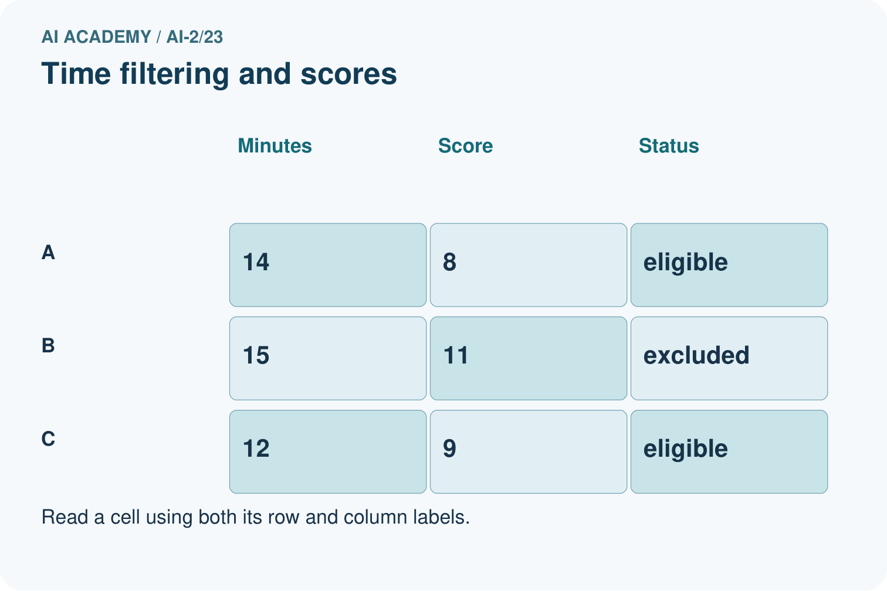
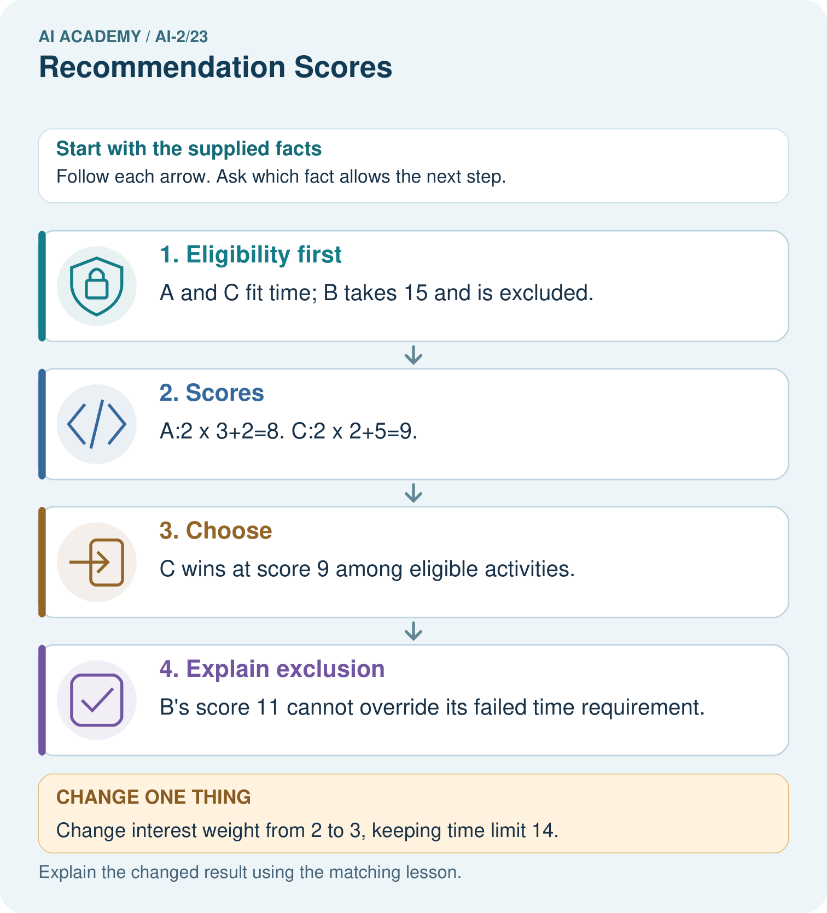
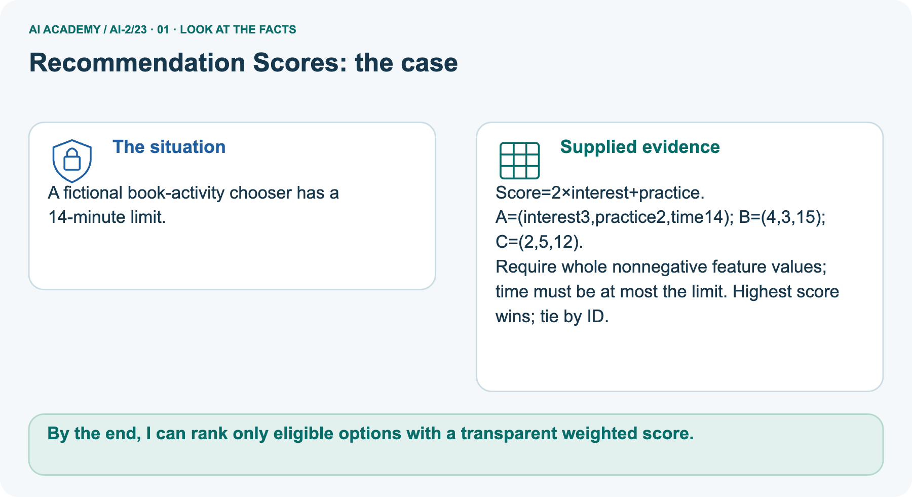
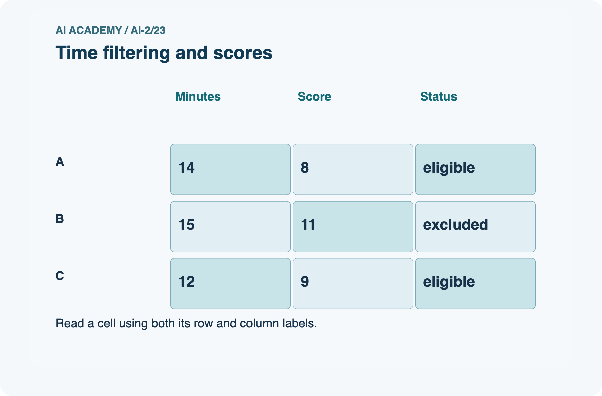
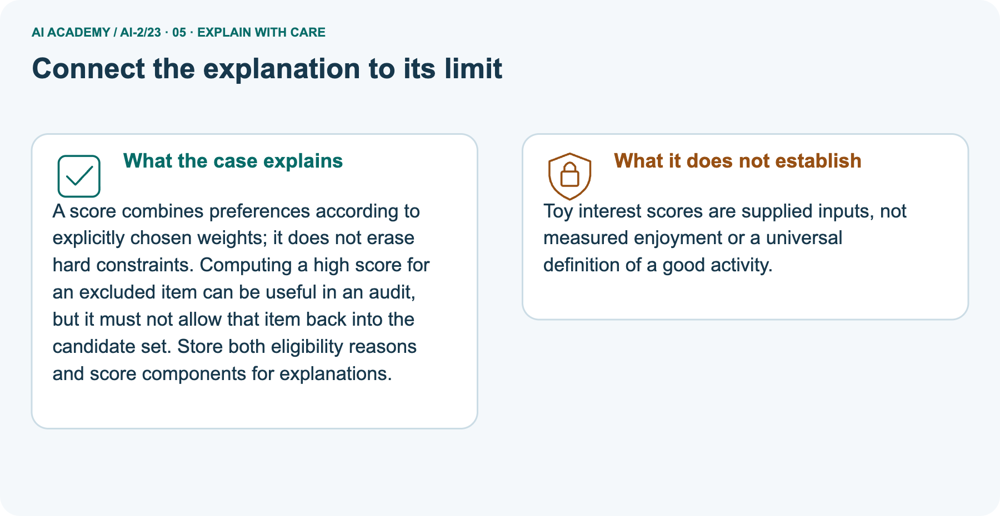
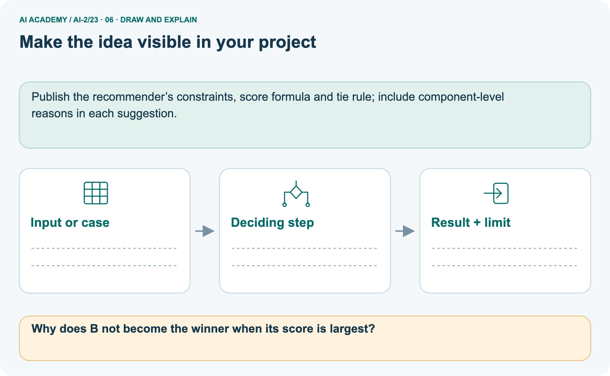

AI Academy · Level 2 · Grade 7 · Week 23 · Student lesson
Recommendation Scores
Learn to understand, design, build, test and explain AI systems responsibly.
Project: Transparent Book Recommender
THE CONNECTED WEEK
Check eligibility. Calculate components. Explain the choice.
Rank only permitted activities under explicit preference weights, tie rules and empty-result handling.
Keep one habit: Opening constraint → separate weight-sensitive tie → full audit → independent fresh limit.
Main lesson · Section 1
Which choices qualify before their scores are compared?
Keep mandatory requirements separate from weighted preferences.
Your learning goals
I can compute a weighted score.
I can apply hard constraints before ranking.
I can explain how weight choices change outcomes.
Recall the direction of a distance comparison
Close your notes first. A rough first answer helps us choose the right starting point; it is not a score for your ability.
Which is closer under absolute-gap distance: a gap of 2 or a gap of 5?
Your end goal
By the end, I can rank only eligible options with a transparent weighted score.
Earlier wording, alternatives and picture transcripts
Your learning target
Remember before reading
Without opening the old lesson, explain one key idea from Nearest Neighbor Reasoning. Give an example and a mistake that the idea helps you avoid.
Without opening the old lesson, explain one key idea from Repair Bias in Data. Give an example and a mistake that the idea helps you avoid.
Without opening the old lesson, explain one key idea from Noise and Outliers. Give an example and a mistake that the idea helps you avoid.
After trying, check the relevant lesson or ask your teacher. Change the part of your explanation that the evidence shows was wrong.
Week 23: Recommendation Scores
A weighted score expresses priorities but also embeds choices.

THINKER MISSION
Create two user profiles and calculate book rankings.
Thinker name and date:
Readiness for the connected explanation
This week’s end goal
Main lesson · Section 2
State the activity score and20-minute requirement
A preference score cannot compensate for an exceeded time limit.
Feature meanings, scales, formula and hard limit
A fictional activity chooser uses enjoyment and learning ratings from 0 to 5. Its score is 2 times enjoyment plus learning. The activity must also take at most 20 minutes.
Duration is a hard requirement; a high score cannot compensate for exceeding it.
Earlier wording, alternatives and picture transcripts
PICTURE STORY
Notice → Predict → Explain
Begin with visible evidence. Do not explain more than the picture and information support.
MYSTERY
The learners must use recommendation scores to solve a problem. What information do they have? What decision or calculation do they make? What would count as evidence that it worked?
Three observations (what you can point to):
My prediction and the clue supporting it:
A closer explanation
Main lesson · Section 3
Trace eligibility before the score calculation
Only the eligible activity is printed by this minimal example.
Predict and run the complete opening script
options = [{"name": "A", "fun": 4, "learning": 2, "minutes": 15},
{"name": "B", "fun": 3, "learning": 5, "minutes": 25}]
for item in options:
if item["minutes"] <= 20:
score = 2 * item["fun"] + item["learning"]
print(item["name"], score)Explain the inclusive boundary and ordered decisions
Follow the evidence
Only A is printed, with score 10. If B took 20 minutes it would qualify and have the higher score 11. The inclusive boundary matters.
Ratings and weights are invented for practice and require justification before use in a real decision.
Make two decisions in order. First check the duration: A takes 15 minutes and qualifies under the 20-minute limit; B takes 25 minutes and does not. Then calculate scores for eligible choices. A scores 2 times 4 plus 2, or 10.
B would score 11, but that score cannot remove the time requirement. Keep the rejection reason beside B instead of calling it a worse-scoring activity.
State input assumptions and omitted review handling
This short script assumes the named fields are present, fun/learning are valid whole-number0–5 ratings and minutes is a nonnegative whole number. It demonstrates the time constraint and scoring; it is not a complete input validator. A missing field must not be silently treated as0. Keep rejected items and reasons in the investigation record even though this minimal script prints only eligible choices.
Explain a deciding step
Point to the input, the deciding step and the result in this week’s visual. Explain the same step in ordinary words. A picture helps when you can say what each part represents.
Earlier wording, alternatives and picture transcripts
VISUAL MECHANISM
Input → Process → Output
Trace the information. At each stage, ask what changed and how you could test it.

↓

↓

Which stage could fail even when the other two are correct? Explain:
A closer explanation
Check must-have rules before scoring
Connect the picture and the explanation
Main lesson · Section 4
Challenge an excluded high score and an exact boundary
Changing a preference does not silently change a hard requirement.
Four pictures with a purpose

Normal case: predict the result and deciding evidence.

Boundary case: identify the exact limit.

Missing information: name what must be clarified.

Transfer case: explain which procedure still applies.
Choose a revealing case
Which case is most likely to reveal a hidden assumption? Why?
Predict the supplied changed case
Change: Change interest weight from 2 to 3, keeping time limit 14.
Check after predicting
Prediction: A scores 11; C also scores 11; tie-by-ID chooses A.
Reason: B remains too long; changing preferences changes only ranking of A and C.
Earlier wording, alternatives and picture transcripts
CASE GALLERY
Four Tests, Four Kinds of Evidence
A system is not understood until it survives more than one comfortable example.
NORMAL CASE: predict and name evidence. BOUNDARY CASE: predict and name evidence.
MISSING INFORMATION: predict and name evidence. TRANSFER CASE: predict and name evidence.
Change one thing in the pictured case
Main lesson · Section 6
Change weights while keeping eligibility visible
Trace the separate pictured interest/practice comparison.
Try the opening weight change before discussing
Separate the different activity records
Keep the cases distinct: opening activities use fun/learning with a20-minute limit and weights(2,1); the separate pictured choices below use interest/practice and a14-minute limit. Independent W4 later uses its own15-minute limit and ratings. NamesA/B/C do not mean the same rows in every case.
Read the14-minute pictured contract
A fictional book-activity chooser has a 14-minute limit.
Score=2×interest+practice. A=(interest3,practice2,time14); B=(4,3,15); C=(2,5,12).
Require whole nonnegative feature values; time must be at most the limit. Highest score wins; tie by ID.
Trace eligible scores and exclusion



A score combines preferences according to explicitly chosen weights; it does not erase hard constraints.
Computing a high score for an excluded item can be useful in an audit, but it must not allow that item back into the candidate set. Store both eligibility reasons and score components for explanations.
Predict interest weight3 under the same limit
Change one thing: Change interest weight from 2 to 3, keeping time limit 14. Predict the result before checking the explanation. What remains the same?
Check the tie policy after predicting



Explain why B remains excluded and limit the claim
Read the labelled picture: Why does B not become the winner when its score is largest?
Toy interest scores are supplied inputs, not measured enjoyment or a universal definition of a good activity.
Earlier wording, alternatives and picture transcripts
WORKED EVIDENCE
Reason Step by Step
Predict first. Then check each step. A correct answer without visible reasoning is incomplete evidence.

1. Score = 3×genre match + 2×difficulty match + 1×length match.
2. Book A matches genre and length: 3+0+1=4.
3. Book B matches difficulty and length: 0+2+1=3.
4. A ranks first for these weights—not as a universal best book.
Recalculate, retrace, or restate the reasoning in your own representation:
CHECK Did the evidence answer the exact question? Did the total, path, or source record stay consistent?
A closer explanation
Learn from the worked case
Cover the result before checking it. Say what is given, choose the procedure, and follow one step at a time. Then uncover the result and explain your first mismatch. Ask why a step is allowed, not only what number it produces.
A pictorial worked case: Recommendation Scores
The facts we will use






Read the picture one step at a time
Why this result follows
What this example does not establish
Main lesson · Section 7
Weights encode declared preferences, not educational truth
Explain who chose the rule and retain sensitivity results.
State the preference and benefit limits
Weights represent preferences, not a discovered truth. Explain who chose them and test whether small changes alter the recommendation. Avoid claiming that a larger score proves greater educational value.
Calculate the supplied W5 sensitivity comparison
Earlier wording, alternatives and picture transcripts
ERROR DETECTIVE
Compare → Diagnose → Repair
Do not patch the answer. Find the earliest unsupported assumption, wrong step, or weak evidence.

| Evidence record | Expected | Actual | Likely cause / next test |
|---|---|---|---|
| normal case | works | ||
| boundary case | stated rule | ||
| missing input | safe response | ||
| fresh transfer | generalizes |
Repair one cause. Why is this repair better than changing several things?
A closer explanation
Main lesson · Section 8
Report no eligible option rather than silently relaxing the rule
A ranking is only among the permitted set.
Check the ordering and empty-result policy
Choosing the highest score and only then ignoring its duration breaks the requirement. Filter for eligibility first. If no item qualifies, report no eligible option instead of relaxing a requirement silently.
Practise the standalone duration boundary in W2
Use workbook W2 for the connected example “Weighted scores and constraints”. First fill the input and rule boxes. Try the middle steps before asking for a hint. After a hint, try the next step yourself.
| Plan | Do | Check |
|---|---|---|
| What is given? Which rule or procedure applies? | Record each intermediate step. | Does the result follow? What remains unknown? |
Explain your trace to a partner. Your partner points to one step to check. Swap roles on the next case. Each person writes their own explanation.
Challenge a successful-run guarantee
Use the worked case for Weighted scores and constraints. Proposed explanation: “A successful run proves the conclusion”. Decide whether this explanation is supported.
Point to the step or supplied fact that decides; explain your repair if needed.
Answer on your own before discussion. If you are unsure, say which step you need help with.
Explain the pictured excluded high score
Why does B not become the winner when its score is largest?
This is supported practice. Keep the separately named independent case for an attempt before feedback.
Earlier wording, alternatives and picture transcripts
LOGIC STUDIO
Trace Before You Run
Block code, pseudocode, tables, and diagrams are different ways to expose the same reasoning.

SET evidence_record PREDICT expected_result RUN one normal case and one boundary case COMPARE actual_result with expected_result IF different: locate first cause; change one factor; RETEST EXPLAIN result, limitation, and next safe step
Trace one input. Which line changes the state or chooses a path?
A closer explanation
Practise with less help: Check a boundary
Check your reasoning
Explain the picture
Main lesson · Section 9
Audit two supplied preference settings on the same eligible set
Keep score components, exclusion reasons, ties and changed versions visible.
The complete input-validation and scoring program
options = [{"id": "A", "interest": 3, "practice": 2, "minutes": 14},
{"id": "B", "interest": 4, "practice": 3, "minutes": 15},
{"id": "C", "interest": 2, "practice": 5, "minutes": 12}]
limit = 14
for interest_weight in [2, 3]:
scores = {}
review = []
for item in options:
values = [item.get(key) for key in ["interest", "practice", "minutes"]]
if not all(type(value) is int and value >= 0 for value in values):
review.append((item["id"], "missing or invalid input"))
elif item["minutes"] > limit:
review.append((item["id"], "exceeds time limit"))
else:
scores[item["id"]] = interest_weight * item["interest"] + item["practice"]
print("weight", interest_weight, "scores", scores, "review", review)
if not scores:
print("No eligible option")
else:
highest = max(scores.values())
tied = sorted(name for name in scores if scores[name] == highest)
print("top", tied, "chosen", tied[0])Predict, execute, compare weights and test an empty set
Use the complete pictured A/B/C records repeated in this script. The interest/practice contract here is whole nonnegative values; IDs are supplied unique text. Predict eligibility and each component before running with interest weights2 and3, practice weight1 and limit14. Keep the data and limit unchanged between these fictional preference settings. all checks that every required value meets the stated input rule before any scoring. max finds the highest eligible score; sorted retains alphabetical tie order. Record all tied top IDs and the disclosed chosen ID, as well as excluded rows and reasons. Then on a separate copy set limit0 to check no eligible option, without treating the changed limit as the original user requirement. No real preference is measured and no model is trained. Reserve the15-minute independent case for W4.
Retain evidence and explain the tradeoff
| Test / input | Prediction | Actual | Evidence / calculation | Change or keep? |
|---|---|---|---|---|
| normal | ||||
| boundary | ||||
| missing | ||||
| fresh transfer |
What did the hardest test teach you that the normal test did not?
Before trying: what do I expect, and why? While trying: which step could first go wrong? Afterwards: what did I actually observe, and what should change? Keep “not run” if you only traced the procedure.
Earlier wording, alternatives and picture transcripts
EVIDENCE LAB
Predict → Test → Record → Explain
Keep expected and actual results separate. Surprises are useful data when recorded honestly.

Use the supplied14-minute A/B/C records and complete two-weight comparison. Retain eligible scores, excluded rows and reasons, all top ties and the declared ID choice. Test no eligible option on a separately labelled changed-limit copy; do not invent reader measurements.
Plan → try → check
Main lesson · Section 14
Try alone: use the fresh15-minute constraint and scores
Calculate the audit scores but choose only among eligible choices.
The independent records and rule
Limit is 15 minutes. A has fun 3, learning 4, minutes 15; B has 5, 1, 16; C has 2, 5, 12. Calculate scores with 2 * fun + learning and choose.
Your first attempt and help record
Attempt this case before feedback. Record any help. Earlier examples below are further practice; a case already practised with feedback cannot establish fresh transfer.
Your teacher has the independent answer and scoring criteria. Complete the matching workbook week to keep your practice evidence together.
Use feedback after the attempt
Attempt the independent case before hints. Record whether you worked alone, used a hint or followed a model. After feedback, fix the first unsupported step and explain why it changed.
A later check uses a changed case, not a copied answer.
Earlier wording, alternatives and picture transcripts
Independent case: Choose independently
Week 23 Independent application
Close the worked explanation. Apply the idea to this different question without copying.
A recommender gives 3 points for topic match and 1 for difficulty match. Book A matches topic only; B matches difficulty only. Compute scores and justify the ranking.
My answer, with a trace, calculation or supporting evidence
Create and test
Change one relevant detail. Predict the result before testing. Include a boundary or missing-information case when it helps reveal a limit.
My changed input and expected result
Connect to your project
Publish the features, weights, raw scores, and reason for the top result.
The evidence I will keep
Transfer practice from the original programme
Score=3×genreMatch+2×short+illustrated. Compute A=[1,0,1], B=[0,1,1], C=[1,1,0]. A reader now requires illustrations. Which book wins after applying that constraint?
Use feedback to improve
Main lesson · Section 11
Publish the recommender’s constraints and score explanation
Make the preference rule and human choice inspectable.
This week’s concrete contribution
For the fictional recommender publish hard requirements, validated feature meanings, weights and the tie policy. Apply eligibility before selecting by score; preserve unknown-required-field review and no-eligible-option outcomes. Show each score component and why alternatives were excluded. A hand-specified weighted score is not a trained model, a measured learning benefit or an objective preference for every reader.
Publish the recommender’s constraints, score formula and tie rule; include component-level reasons in each suggestion.
Keep the checkpoint, system and decision
THIS WEEK’S CHECKPOINT Publish the features, weights, raw scores, and reason for the top result.
SYSTEM MAP Reader need → allowed inputs → transparent rule or score → ranked candidates → explanation → test record → human decision
What will you add, change, or verify in the project this week?
What should remain under human control?
RESPONSIBLE DESIGN Collect only necessary information. Show uncertainty and limits. Never confuse a ranking with a fact about a person.
Earlier wording, alternatives and picture transcripts
CUMULATIVE PROJECT
Transparent Book Recommender
Every week adds one inspectable piece. The system must show how it reached a result.

Evidence for your project
Main lesson · Section 16
Finish: explain eligibility, score and chosen preference separately
Retain the rejected high score without allowing it to override the rule.
Explain without notes
Close your notes. Explain this goal in your own words: Compute a weighted score
Plan a changed-case return
If you are unsure, return to the worked picture and explain one arrow. If you are ready, change an input or assumption and justify your prediction.
Save your workbook evidence. At the next review, try a different case before opening your old answer.
Reference bank and extra practice
Choose the reference that helps your next step.
Your quick word guide
Reference · Section 5
Your quick word guide
Use the words to explain a particular step, record or limit.
Core vocabulary
| Word | My own example | Not this / boundary |
|---|---|---|
| weight | A multiplier controlling how strongly a feature or value contributes to a calculation. | |
| score | A numerical value assigned using a specified rule; it is not automatically a probability. | |
| rank | Place candidates in an order using a declared comparison rule. | |
| tradeoff | A situation where improving one desired property can make another harder to achieve. |
Terms for the connected explanation
| Word | Meaning |
|---|---|
| Constraint | A requirement an option must meet |
Earlier wording, alternatives and picture transcripts
VOCABULARY LAB
Words You Can Use to Reason
A definition matters when you can recognize the idea, use it, and contrast it with a near-miss.


Words used in the closer explanation
Choose a stronger thinking challenge
Reference · Section 10
Choose a stronger thinking challenge
Choose the next useful challenge rather than treating the whole ladder as compulsory.
Pick your next step
1 • NAME: Define the concept without repeating the textbook.
2 • TRACE: Show the information, state, branch, calculation, or evidence path.
3 • APPLY: Solve a different example independently.
4 • CHALLENGE: Find a boundary case, counterexample, or unfair outcome.
5 • EXPLAIN LIMITS: Say when the result should not be trusted or used alone.
My strongest evidence of independent understanding:
Earlier wording, alternatives and picture transcripts
MASTERY
From Knowing the Word to Owning the Idea
Move upward only when you can produce evidence without copying the worked example.

Reference: check your explanation
Reference · Section 12
Reference: check your explanation
Use after practice. Choose independently is the selected independent case.
Check the evidence and its limit
1. My fresh example, trace, calculation, or design:
2. My evidence that it works (include a boundary or missing-data case):
3. One limitation, fairness concern, or situation needing human review:
Self-check and record
SELF-CHECK □ I explained the mechanism □ I used evidence □ I tested a fresh case □ I named a limitation □ I can answer ‘why?’
Earlier wording, alternatives and picture transcripts
INDEPENDENT MASTERY PROOF
Checklist for explaining this week’s idea
Use after practice. Choose independently is the selected independent case.

EXPLANATION CHECK Apply hard requirements before ranking, retain weighted components and exclusion reasons, and disclose ties and empty outcomes.
Extra practice: Weighted preferences determine the score
Reference · Section 13
Extra practice: Weighted preferences determine the score
Try the question before opening its worked explanation.
Read the supplied case and question
Score=2 times genre match + length match. A matches both, B genre only, C length only.
Score and rank.
Your explanation
Which detail supports the answer, and why does it matter?
Check after trying
A=3, B=2, C=1. Weights encode a chosen preference, not universal reader truth.
| Evidence or stage | Value or result |
|---|---|
| A | 3 |
| B | 2 |
| C | 1 |
Earlier wording, alternatives and picture transcripts
Week 23 Worked case
Use the supplied details to practise the weekly concept before attempting the independent question. This case extends the illustrated lesson.
The situation
The question
Worked explanation
Explain it in your own words
Trace the supplied case visually
Weighted preferences determine the score
Score=2 times genre match + length match. A matches both, B genre only, C length only.
Score and rank.
A=3, B=2, C=1. Weights encode a chosen preference, not universal reader truth.
Reference: original lesson checklist
Reference · Section 15
Reference: original lesson checklist
Use an additional checklist when it helps inspect your explanation.
Targets and evidence
| By the end, I can | How I will show it |
|---|---|
| Compute a weighted score | Explain the deciding step, show a trace or test, and state one limit. |
| Apply hard constraints before ranking | Explain the deciding step, show a trace or test, and state one limit. |
| Explain how weight choices change outcomes | Explain the deciding step, show a trace or test, and state one limit. |
Keep your route and first prediction
Remember → watch and explain → try with help → investigate → try independently → keep project evidence. Your teacher may spread this lesson across several classes.
Keep your first prediction. Compare it with what the evidence shows and explain any change.
Earlier wording, alternatives and picture transcripts
Start with this question: A fictional book-activity chooser has a 14-minute limit.
Extra practice: pictures, repair and feedback
Reference · Section 17
Extra practice: pictures, repair and feedback
Attempt each question before opening its explanation. Use one browser or paper copy.
First supported question
A fictional book-activity chooser has a 14-minute limit.
Which labelled step matches this detail? B’s score 11 cannot override its failed time requirement.
1. Choose
2. Explain exclusion
3. Eligibility first
4. Scores
Hint if needed: Read the steps in the pictorial case. Match the supplied detail to the stage that performs or records it.
Practice 1: explain the deciding evidence
Check the first explanation
After your attempt, compare with the supported explanation: Explain exclusion B’s score 11 cannot override its failed time requirement.
A score combines preferences according to explicitly chosen weights; it does not erase hard constraints.
Computing a high score for an excluded item can be useful in an audit, but it must not allow that item back into the candidate set. Store both eligibility reasons and score components for explanations.
Changed-case question
Changed-case practice: Change interest weight from 2 to 3, keeping time limit 14. Which conclusion is supported by the supplied facts?
1. This one example guarantees correct results for every future input.
2. We can decide the result without examining the changed input or the procedure.
3. A scores 11; C also scores 11; tie-by-ID chooses A.
Hint if needed: Use the changed condition and the deciding step in the pictorial trace. The answer must say what follows from those facts.
Practice 2: explain the deciding evidence
Check the changed case
After your attempt, compare with the supported explanation: A scores 11; C also scores 11; tie-by-ID chooses A. B remains too long; changing preferences changes only ranking of A and C.
Repair and save your work
Review Nearest Neighbor Reasoning (ai-2/22). Goal: Compute absolute distances and rank training neighbours. Short practice: Why do k=1 and k=3 disagree for the original query?. Return to this week and explain what you changed.
Review Repair Bias in Data (ai-2/20). Goal: Identify selection and coverage bias. Short practice: Why must 35% be labelled an illustration rather than the measured grade-wide Yes rate?.
Return to this week and explain what you changed.
Review Noise and Outliers (ai-2/17). Goal: Calculate mean and median. Short practice: If 18 was genuine, which summary better describes the middle observed task, and what extra fact should be shown?.
Return to this week and explain what you changed.
The browser lab lets you edit the supported Python examples already included in this lesson. Predict first, run, inspect the actual output or error, change one input, then run again.
Keep code, predictions, actual results and a reasoned revision together. On paper, label your result as a trace rather than an execution.
Use Download completed work in the hosted lesson to export your answers, reflections, practice feedback and code-run evidence. Open the HTML copy to read or print it.
Drafts stay in this browser when storage is available; clear drafts on a shared device.
Earlier wording, alternatives and picture transcripts
Use this supported practice once, in the browser or on paper. Keep the reserved independent assessment for a separate first attempt before teacher feedback.
Repair a missing building block
Predict, run and debug
Keep your completed work
Reference: the six-picture journey
Reference · Section 18
Reference: the six-picture journey
Revisit the picture that serves the current question; key diagrams already sit beside the main explanation.
01. Recommendation Scores: the case



A fictional book-activity chooser has a 14-minute limit. Supplied facts: Score=2×interest+practice. A=(interest3,practice2,time14); B=(4,3,15); C=(2,5,12).
Require whole nonnegative feature values; time must be at most the limit. Highest score wins; tie by ID.
Point to the given fact that matters most. Explain why it matters.
02. Follow the deciding steps
Eligibility first: A and C fit time; B takes 15 and is excluded. → Scores: A:2×3+2=8.
C:2×2+5=9. → Choose: C wins at score 9 among eligible activities. → Explain exclusion: B’s score 11 cannot override its failed time requirement.
Point to each numbered stage and explain which recorded input it uses.
03. Time filtering and scores



Time filtering and scores. A: Minutes = 14, Score = 8, Status = eligible. B: Minutes = 15, Score = 11, Status = excluded. C: Minutes = 12, Score = 9, Status = eligible.
Read the labels and values. Explain the relationship the model shows.
04. Change one thing. Trace what follows.
Original case: B’s score 11 cannot override its failed time requirement. Changed condition: Change interest weight from 2 to 3, keeping time limit 14. Expected result: A scores 11; C also scores 11; tie-by-ID chooses A.
Reason: B remains too long; changing preferences changes only ranking of A and C.
Predict before checking the worked changed-case result. Name what changed and what the supplied facts allow you to conclude.
05. Connect the explanation to its limit



A score combines preferences according to explicitly chosen weights; it does not erase hard constraints.
Computing a high score for an excluded item can be useful in an audit, but it must not allow that item back into the candidate set. Store both eligibility reasons and score components for explanations.
Limit: Toy interest scores are supplied inputs, not measured enjoyment or a universal definition of a good activity.
Explain the case, then point to a limit on the claim.
06. Make the idea visible in your project



Publish the recommender’s constraints, score formula and tie rule; include component-level reasons in each suggestion. Draw your input, deciding step, result and limit.
Supported question: Why does B not become the winner when its score is largest?
Draw your project trace and justify the deciding step using evidence.